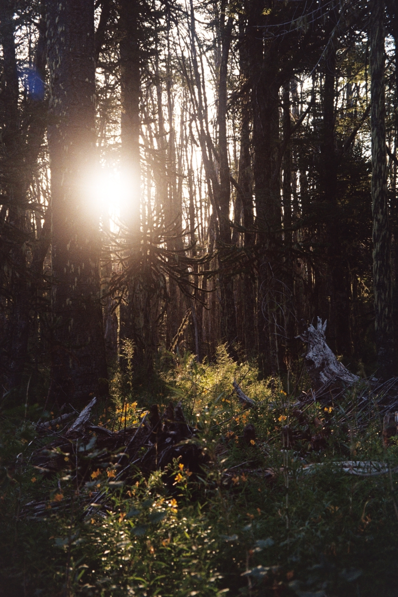
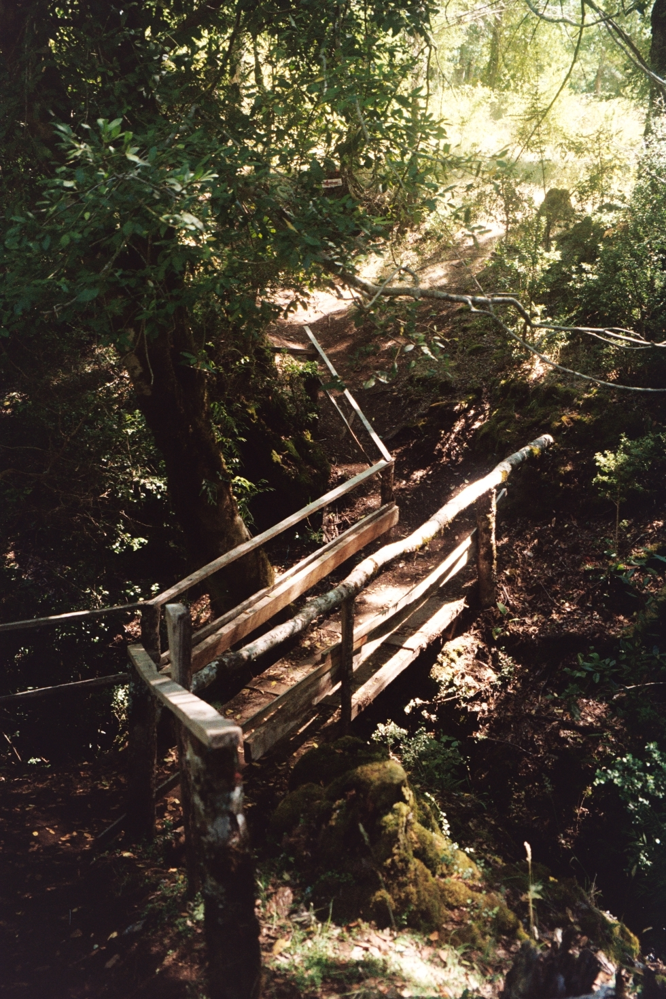
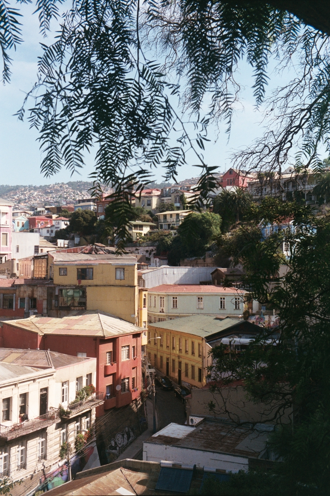
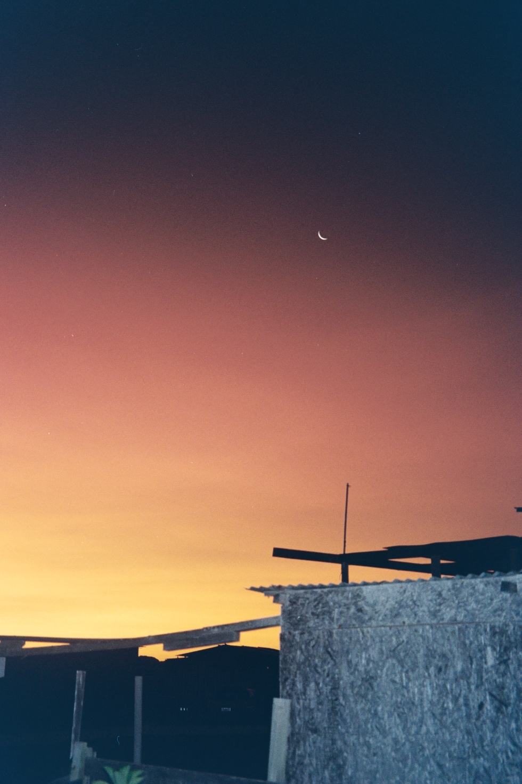
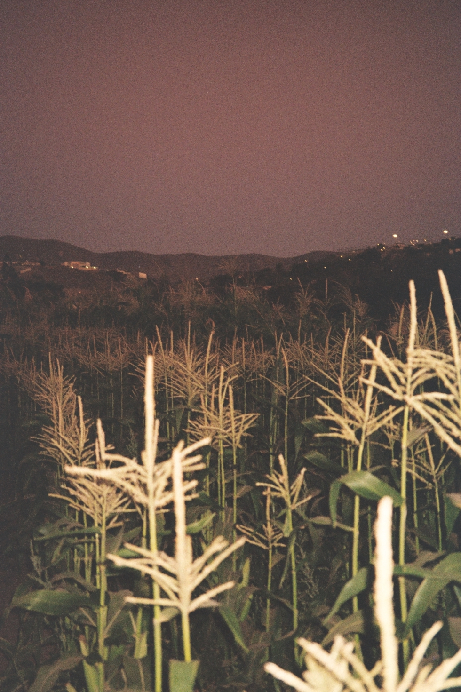
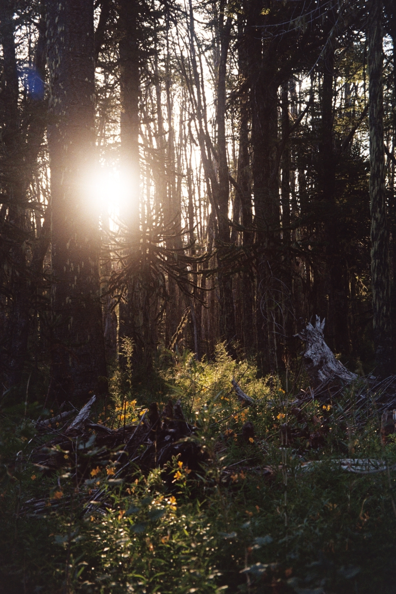
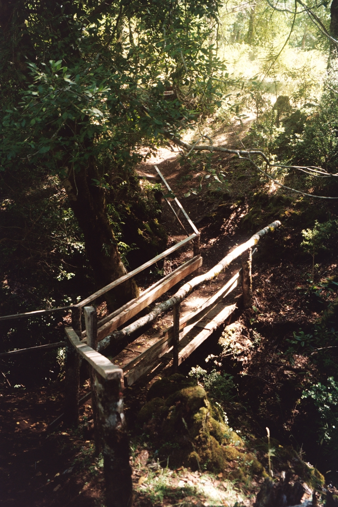
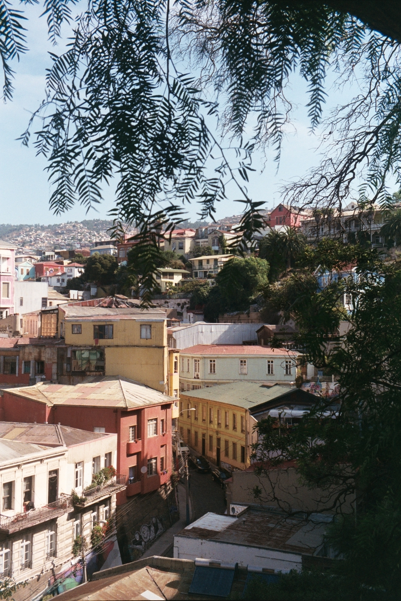
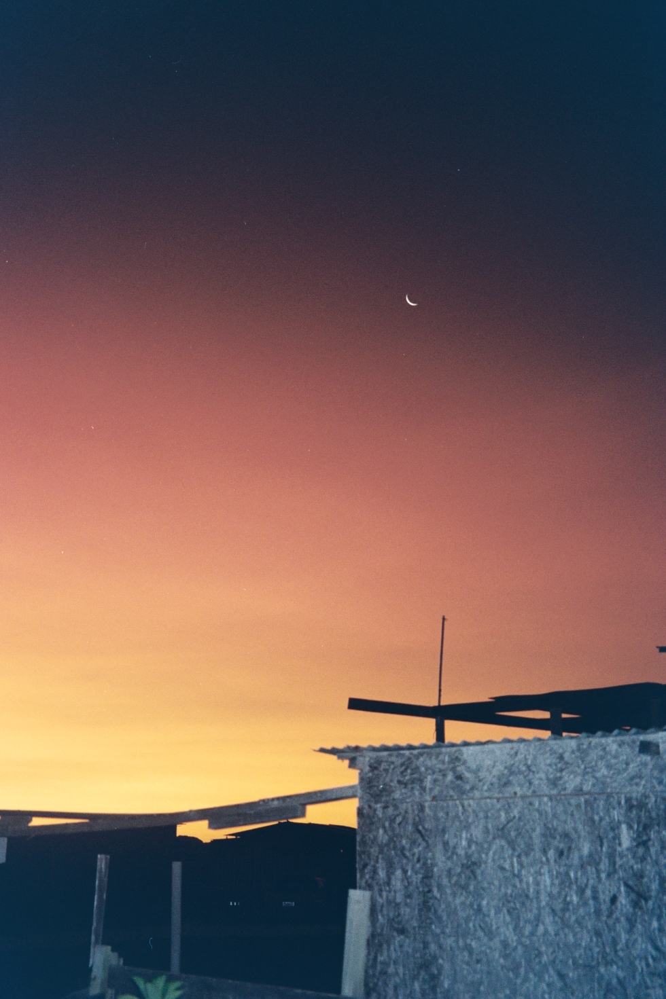
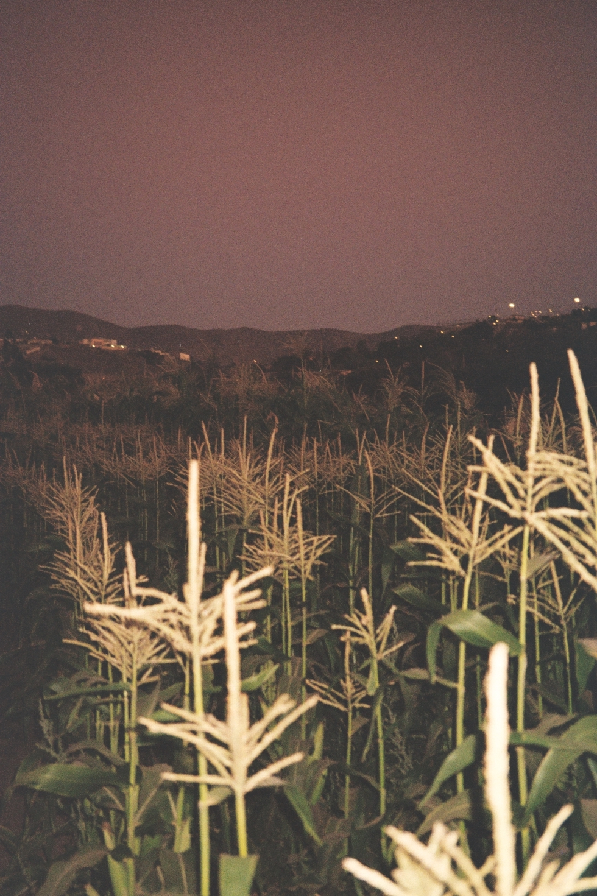

About Me
Hi everyone!
I am Fernanda, but everyone calls me Fer. I am a Chilean astronomer currently pursuing a Master's degree in Astrophysics at Pontificia Universidad Católica de Chile, where I also completed my Bachelor's degree.
During my studies, I developed a strong interest in extragalactic astronomy. My main research focuses on galaxy evolution across cosmic time and on studying the circumgalactic medium (CGM) and the baryon cycle. That's why I joined the ARCTOMO team, where we use gravitational lensing as a tool to explore the CGM!
In connection with this work, I have participated in several conferences and workshops — presenting my research, helping with their organization, taking photos, and welcoming attendees.

Beyond Astronomy
Outside of astronomy, I enjoy a variety of activities that keep me active and creative. I’ve been passionate about sports since I was very young — I played on my school’s basketball team for four years and still love playing with friends and family. Over the past few years, I’ve gotten into climbing, and more recently, I’ve started dancing and running.
I also have a deep love for art. I enjoy analog photography, ceramics, and painting — during school, I took oil painting classes, which really sparked my creativity and appreciation for artistic expression.

Here are some photos I took with my Canon Prima Super 115!
 








